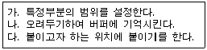
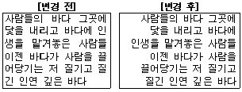
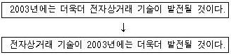
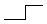
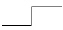
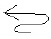
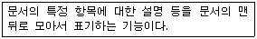

워드프로세서-2급(폐지) (2003-08-31 기출문제)
1과목: 워드프로세서 용어 및 기능
1. 다음 중 레이저 프린터에 대한 설명으로 옳지 않은 것은?
- 복사기의 인쇄 원리와 같은 방식으로 인쇄한다.
- 오랜 시간 동안 사용하지 않으면 노즐이 막힐 수 있고 잉크가 번질 수 있다.
- 인쇄 속도가 빠르고 인자의 선명도가 높으며 소음이 적다.
- 초기에는 가격이 비쌌지만 최근에는 저가격의 보급형이 많이 보급되고 있다.
(정답률: 67%)

2. 다음 중에서 보조기억장치로만 짝지어진 것은?
- ROM, 하드디스크
- 스캐너, 플로피디스크
- 자기 디스크, 자기 테이프
- 플로터(Plotter), 하드디스크
(정답률: 56%)
3. 다음 보기의 내용을 차례대로 수행 완료한 경우를 나타내는 편집기능은?

- 영역삭제
- 영역이동
- 영역복사
- 영역지정
(정답률: 60%)
4. 다음 보기의 [변경 전]과 [변경 후]의 문단 모양의 정렬 방식의 변화를 올바르게 표현한 것은?

- 왼쪽 정렬 → 양쪽 정렬
- 양쪽 정렬 → 오른쪽 정렬
- 오른쪽 정렬 → 왼쪽 정렬
- 가운데 정렬 → 오른쪽 정렬
(정답률: 75%)
5. 다음 중에서 행의 처음에 올 수 없는 행두금칙문자로만 짝지어진 것은?
- { #
- ( “
- ? ;
- [ $
(정답률: 85%)
6. 다음 중 낱장 용지의 크기에 관한 설명으로 옳지 않은 것은?
- 현재 대부분의 프린터에서 사용하는 인쇄 용지로 A판과 B판이 있다.
- 인쇄 용지에서 뒤의 숫자가 같을 경우 A판이 B판보다 크다.
- 같은 A판 또는 B판에서 뒤의 숫자가 작을수록 용지의 크기는 크다.
- 같은 A판 또는 B판에서 뒤의 숫자가 1씩 커질수록 용지의 크기는 절반으로 줄어든다.
(정답률: 71%)
7. 다음 중 저장기능에 대한 설명으로 옳지 않은 것은?
- 주기억장치인 RAM에 기억되어 있던 문서를 보조기억장치로 옮기는 것을 말한다.
- 워드프로세서에서 기본으로 제공하는 하나의 파일 형식으로만 저장할 수 있다.
- 저장된 파일 형태에 따라 확장자가 다르다.
- 일반적으로 확장자 TXT로 저장된 문서는 메모장이나 워드패드에서 편집이 가능하다.
(정답률: 58%)
8. 다음 중 한자 단어 변환에 대한 설명으로 옳지 않은 것은?
- 한글을 단어 단위로 한자 사전에서 찾아 변환한다.
- 모든 단어에 대해 변환이 가능한 것은 아니다.
- 자주 사용하는 단어가 한자 단어 사전에 등록되어 있는 경우 한자 변환에 효과적이다.
- 단어 단위로 변환하므로 음절 단위보다 변환 시간이 느리다.
(정답률: 62%)
9. 다음 중 문서 작성의 탭 기능에 대한 설명으로 옳지 않은 것은?
- 일정한 간격으로 커서를 신속하게 이동시킬 수 있다.
- 탭을 이용하면 특정 단어를 빠르게 찾을 수 있다.
- 탭 간격은 임의로 변경할 수 있고 삭제할 수도 있다.
- 탭의 종류에는 왼쪽 탭, 오른쪽 탭, 점끌기 탭, 소수점 탭 등이 있다.
(정답률: 63%)
10. 다음 중 문단 정렬 기능에 대한 설명으로 옳은 것은?
- 특정 부분을 범위로 지정한 후 이동시키는 기능이다.
- 특정 단어나 문자열을 다른 단어나 문자열로 바꾸는 기능이다.
- 새로운 문단의 시작부분을 일정하게 들여 넣어 입력하는 기능이다.
- 라인의 우측, 좌측 등 한곳을 기준으로 문서 내용을 맞추는 기능이다.
(정답률: 59%)
11. 다음 중에서 붙여넣기에 해당되는 단축키는 어느 것인가?
- [Ctrl] + [C]
- [Ctrl] + [X]
- [Ctrl] + [A]
- [Ctrl] + [V]
(정답률: 85%)
12. 다음중 윈도우의 메모장에서 한글 자음을 입력한 후 특수 문자를 선택하려면 어떤 키를 사용해야 하는가?
- [F10] 키
- [F9] 키
- [Insert] 키
- [한자] 키
(정답률: 65%)
13. 다음과 같이 문장을 변경할 때 사용된 교정부호는?


(정답률: 90%)
14. 다음 중 문장에서 줄 사이의 간격을 띄우라는 교정부호는?


(정답률: 75%)
15. 다음 중에서 문서의 폐기 방법으로 가장 적절하지 않은 것은?
- 비밀문서를 소각하였다.
- 비밀문서를 문서세단기를 이용하여 폐기하였다.
- 비밀문서를 재생, 활용하였다.
- 일반문서를 재생, 활용하였다.
(정답률: 61%)
16. 사무, 문서의 집중 관리 및 처리를 통하여 경비를 절약할 수 있다면 문서관리의 원칙 중 어느 것에 가장 가까운가?
- 정확성
- 신속성
- 용이성
- 경제성
(정답률: 79%)
17. 관인을 찍을 때의 위치는 그 기관 또는 직위의 명칭의 끝 자가 인영의 어느 위치에 오도록 찍어야 하는가?
- 좌측
- 중앙
- 우측
- 어느 위치에 찍어도 상관없다.
(정답률: 74%)
18. 다음의 설명이 의미하는 용어는 어느 것인가?

- 각주
- 미주
- 두문
- 미문
(정답률: 69%)
19. 다음 중 문자 및 그림, 음성, 비디오 등을 서로 유기적으로 결합하여 참조할 수 있는 기능은?
- 갈무리
- 캡션(Caption) 기능
- 화면 캡쳐(Screen Capture)
- 하이퍼미디어(Hyper Media)
(정답률: 82%)
20. 다음 중에서 작성한 문서의 모든 정보를 한 화면에 표시할 수 없을 경우에 상하, 좌우의 문서 내용을 보기 위하여 화면을 이동시키는 것을 무엇이라고 하는가?
- 상태 표시줄(Status Line)
- 스크린 에디터(Screen Editor)
- 스크롤(Scroll)
- 미리보기(Preview)
(정답률: 72%)
2과목: PC 운영 체제
21. 다음 중 한글 Windows 98에서 실행 중인 응용 프로그램의 창을 닫는(종료시키는) 방법은?
- 최소화 버튼을 선택한다.
- [Ctrl] + [F4] 키를 누른다.
- 제목 표시줄을 더블 클릭한다.
- 제목 표시줄의 가장 왼쪽에 있는 창 제어 아이콘을 더블 클릭한다.
(정답률: 55%)
22. 한글 Windows 98에서 실행 중인 응용 프로그램 창에 대하여 새로고침(Refresh) 기능을 수행하는 바로 가기 키는?
- [F4]
- [F5]
- [Ctrl] + [F4]
- [Shift] + [F5]
(정답률: 74%)
23. 한글 Windows 98이 부팅될 때 특정 프로그램을 자동으로 실행되도록 하기 위하여 해당 프로그램이 위치해야 할 폴더는?
- C:\Windows\시작 메뉴\프로그램\시작프로그램\Always
- C:\Windows\시작 메뉴\프로그램\시작프로그램
- C:\Windows\시작 메뉴\프로그램
- C:\Windows\시작 메뉴
(정답률: 51%)
24. 다음 중 한글 Windows 98에서 사용하는 바로 가기 아이콘에 대한 설명으로 옳지 않는 것은?
- 프로그램이나 문서에 쉽게 접근할 수 있도록 한다.
- 바로 가기 아이콘의 확장자 명은 .lnk이다.
- 아이콘의 왼쪽 하단에 꺾긴 화살표로 표시되어 있다.
- 단축 아이콘을 삭제하면 원본 파일도 함께 삭제된다.
(정답률: 74%)
25. 한글 Windows 98에서 전원이 켜진 상태에서 현재의 네트워크 연결을 끊고 다른 사용자가 컴퓨터를 사용할 수 있도록 컴퓨터를 준비하는 작업은?
- 사용자 추가
- 로그오프
- 사용자 제거
- 시스템 종료
(정답률: 77%)
26. 한글 Windows 98에서 [탐색기]를 실행하는 방법으로 옳지 않은 것은?
- [시작] - [프로그램] - [Windows 탐색기]를 선택한다.
- 내 컴퓨터를 마우스 오른쪽 단추로 클릭하여 나타나는 메뉴에서 “탐색”을 실행한다.
- [시작] - [실행]에서 “explorer.exe"를 입력한 후 확인 단추를 클릭한다.
- [Shift] 키를 누른 채 시작 단추를 더블 클릭한다.
(정답률: 57%)
27. 한글 Windows 98에서 작업 표시줄의 등록정보 대화상자를 이용하여 수정할 수 있는 내용이 아닌 것은?
- 시작 메뉴 프로그램의 추가/삭제
- 시작 메뉴에 작은 아이콘 표시
- 문서 메뉴에 있는 목록 삭제
- 시간 설정
(정답률: 44%)
28. 한글 Windows 98에서 [제어판]에 있는 [시스템]의 등록정보 창은 다음 중 어느 것과 동일한가?
- 바탕화면의 등록정보 창
- [내 컴퓨터]의 등록정보 창
- [네트워크]의 등록정보 창
- C: 드라이브의 등록정보 창
(정답률: 59%)
29. 한글 Windows 98에서 [제어판]에 있는 [프로그램 추가/제거]의 등록정보 대화상자에서 할 수 없는 것은?
- 프린트 추가
- Windows 구성요소 제거
- 시동 디스크 작성
- 응용 프로그램 설치
(정답률: 48%)
30. 한글 Windows 98에서 작업 표시줄의 오른 쪽에 있는 트레이 부분에 볼륨 조절 표시를 하고 싶을 때, [제어판]의 어느 프로그램을 사용하여야 하는가?
- 내게 필요한 옵션
- 사운드
- 멀티미디어
- 시스템
(정답률: 26%)
31. 한글 Windows 98에서 마우스를 이용하여 파일을 선택하여 복사하고 이동할 때의 설명으로 옳은 것은?
- C: 드라이브에서 A: 드라이브로 드래그 앤 드롭을 하면 파일이 이동해 버린다.
- 비연속적으로 위치한 파일을 선택할 때에는 [Shift]] 키를 누르고 마우스로 파일을 선택한다.
- 같은 드라이브 내의 다른 폴더로 실행 파일을 끌어다 놓으면 바로 가기 아이콘이 만들어진다.
- 같은 드라이브 내의 다른 폴더로 이동하려할 때 [Ctrl] 키를 누른 상태에서 끌어다 놓는다.
(정답률: 37%)
32. 다음 중 한글 Windows 98에서 사용하는 확장자 중 실행 파일 형식의 확장자가 아닌 것은?
- ZIP
- EXE
- COM
- BAT
(정답률: 58%)
33. 한글 Windows 98에서 사용되는 파일 또는 폴더의 [찾기] 대화상자에서 확장자가 ‘inf' 인 파일을 모두 찾기 위해 검색 창에 써넣어야 할 것은?
- *.inf
- ?.inf
- all.inf
- inf.*
(정답률: 54%)
34. 한글 Windows 98에 설치된 기본 프린터에 대한 설명으로 옳지 않은 것은?
- 인쇄할 때 특별히 프린터를 지정하지 않으면 기본 프린터로 인쇄된다.
- 네트워크 프린터를 기본 프린터로 설정할 수 있다.
- 기본 프린터가 아닌 프린터로도 인쇄할 수 있다.
- 기본 프린터는 여러 대 설치 가능하다.
(정답률: 71%)
35. 한글 Windows 98에서 [보조 프로그램]에 있는 [메모장]에 대한 설명으로 옳지 않은 것은?
- 크기가 64Kbyte를 넘지 않는 간단한 텍스트 형식의 문서를 작성한다.
- 문서의 저장 형식은 확장자가 ‘.TXT’인 아스키 파일이다.
- 편집하는 문서의 일부 문자열에 대한 글꼴을 바꿀 수 있다.
- 대/소문자 및 전자/반자 구분으로 문자열을 찾을 수 있다.
(정답률: 53%)
36. 한글 Windows 98의 [보조프로그램]에 있는 [그림판] 프로그램에서 불러올 수 있는 파일 형식이 아닌 것은?
- BMP
- TXT
- GIF
- JPG
(정답률: 75%)
37. 다음 중 한글 Windows 98에서 디스크 공간이 부족할 경우 이를 해결하는 방법으로 가장 거리가 먼 것은?
- 디스크를 백업한다.
- [휴지통]을 비운다.
- [디스크 정리]를 수행하여 불필요한 파일을 삭제한다.
- 사용하지 않는 Windows 98 구성 요소를 하드디스크에서 삭제한다.
(정답률: 51%)
38. 한글 Windows 98에서 [내 컴퓨터] 창에 있는 디스크 드라이브를 선택하여 등록정보 창을 열면 디스크에 관련된 시스템 도구들을 사용할 수 있다. 이곳에서 사용할 수 있는 시스템 도구가 아닌 것은?
- 디스크 오류 검사
- 디스크 압축
- 디스크 조각 모음
- 디스크 백업
(정답률: 50%)
39. 한글 Windows 98에서 인터넷을 사용하기 위해 반드시 설정해야 하는 프로토콜은?
- NetBEUI
- TCP/IP
- IPX/SPX
- DNS
(정답률: 79%)
40. 한글 Windows 98에서 드라이브나 폴더 또는 파일의 공유와 관련된 사용 권한이 아닌 것은?
- 읽기 전용
- 읽기/쓰기
- 암호에 따라 다름
- 쓰기 가능
(정답률: 49%)
3과목: PC 기본 상식
41. 다음 중에서 폰 노이만의 프로그램 내장 방식을 처음으로 도입한 전자계산기는?
- UNIVAC I
- EDSAC
- ENIAC
- MARK I
(정답률: 52%)
42. 다음 중 유닉스의 일종으로 일반 PC에서도 작동할 수 있게 만들어 무료 배포되고 있으며, 프로그램 소스 코드가 공개되어 있는 운영체제는?
- Windows ME
- DOS
- Linux
- OS/2
(정답률: 64%)
43. 다음 중 기억 장치의 접근 시간이 가장 빠른 것부터 느린 것 순으로 올바르게 나열한 것은?
- DRAM - 캐시 메모리 - 하드디스크 - 플로피디스크
- 캐시 메모리 - DRAM - 하드디스크 - 플로피디스크
- DRAM - 하드디스크 - 캐시 메모리 - 플로피디스크
- 하드디스크 - 캐시 메모리 - DRAM - 플로피디스크
(정답률: 65%)
44. 다음 중 POS(Point of Sales) 시스템에서 상품 가격을 입력하는 장치로 가장 많이 사용되는 것은?
- 터치 스크린
- 키보드
- 자기 문자 리더
- 바코드 리더
(정답률: 74%)
45. 다음 중 모니터에 전원은 들어와 있는데 아무 내용도 표시되지 않을 때 조치사항으로 옳지 않은 것은?
- 컴퓨터와 모니터사이의 케이블의 연결 상태를 확인한다.
- 전원이 연결된 상태에서 그래픽카드를 뽑았다가 다시 끼운다.
- 모니터의 밝기나 contrast를 최대로 해본다.
- 스크린 세이버나 절전 모드로 작동 중인지 확인하기 위해 마우스를 움직이거나 키보드를 눌러본다.
(정답률: 60%)
46. 웹 브라우저를 통해 사운드나 동영상 등을 재생시켜 주기 위하여 추가로 설치하는 프로그램을 무엇이라고 하는가?
- Acrobat
- VRML
- plug-in
- HTML
(정답률: 45%)
47. 다음 중 멀티미디어 관련 기술에 대한 설명으로 옳지 않은 것은?
- 저장기술 : CD-R, CD-RW
- 압축기술 : HTML, SGML, XML
- 검색기술 : Hypertext, Hypermedia
- 전송기술 : ADSL, VDSL
(정답률: 66%)
48. 인터넷을 통해 원격지의 컴퓨터와 연결하여 원격지 컴퓨터의 자원을 마치 로컬 시스템의 자원을 사용하는 것처럼 해주는 서비스를 무엇이라고 하는가?
- 유즈넷(Usenet)
- 텔넷(Telnet)
- 아키(Archie)
- 고퍼(Gopher)
(정답률: 44%)
49. 다음 중 부가가치통신망을 의미하는 약어는?
- LAN
- VAN
- WAN
- SAN
(정답률: 75%)
50. 다음 중 IP 주소로 볼 수 있는 것은?
- 165.254.99.34
- 16:7:89:92
- www.yahoo.com
- 8080
(정답률: 70%)
51. 다음 중 정보화 사회의 문제점이라고 볼 수 없는 것은?
- 시스템 고장이나 오류로 인한 혼란
- 인간성 상실 및 인간 소외 현상
- 개인 정보 누출 및 사생활 침해
- 공간적 제약을 극복한 재택 근무
(정답률: 49%)
52. 다음 중 컴퓨터 기억소자의 발달 순서를 올바르게 나열한 것은?
- 진공관 → IC → 트랜지스터 → VLSI
- 진공관 → 트랜지스터 → IC → VLSI
- 진공관 → IC → VLSI → 트랜지스터
- 진공관 → 트랜지스터 → VLSI → IC
(정답률: 75%)
53. 컴퓨터의 출력 데이터에 따라 펜이 X축과 Y축을 따라 움직이면서 그래프, 도형, 설계도면 등을 그려내는 출력 장치를 무엇이라고 하는가?
- 플로터
- 프린터
- 디지타이저
- 음극선관
(정답률: 50%)
54. 다음의 소프트웨어 중 나머지와 응용 분야가 다른 것은?
- 한글 97
- MS-워드
- 훈민정음
- 포토샵
(정답률: 74%)
55. 다음 중 하드디스크의 파일 공간과 사용되지 않은 공간을 다시 정렬하여 디스크 액세스 속도를 향상시키는 시스템 도구는?
- 디스크 공간늘림
- 디스크 검사
- 디스크 조각모음
- 디스크 압축
(정답률: 69%)
56. 다음 중에서 정지 영상의 파일 확장자로 옳은 것은?
- JPG
- AVI
- MPG
- WAV
(정답률: 57%)
57. 다음 장치 중에서 주변 장치라고 할 수 없는 것은?
- 입력 장치
- 출력 장치
- 연산 장치
- 보조기억 장치
(정답률: 55%)
58. 컴퓨터로 하여금 전자악기를 연주할 수 있고 전자악기가 가지고 있는 모든 기능들을 제어할 수 있는 기본적인 디지털 신호 체계를 위한 인터페이스는 무엇인가?
- FM
- PCM
- MIDI
- Wave Table
(정답률: 74%)
59. 다음 중 공개자료실 이용에 관한 설명으로 옳지 않은 것은?
- 공개자료실에는 그림, 음악파일, 문서자료, 백신 프로그램 등의 공개 자료가 있어서 사용자가 원하는 자료를 다운로드받을 수 있게 한다.
- 파일의 다운로드 시간을 줄이기 위하여 데이터를 압축하여 업로드 한다.
- 공개자료실에서 다운로드받은 자료는 바이러스 검사를 해야 한다.
- 불건전한 정보를 공개자료실에 올려 다른 사용자들과 공유하여야 한다.
(정답률: 68%)
60. 다음 중 컴퓨터 범죄의 유형과 거리가 먼 것은?
- 소프트웨어 무단 복사
- 웹을 통한 도서 정보 검색
- 타인의 컴퓨터에 있는 데이터의 도용
- 타인의 하드웨어나 소프트웨어 훼손
(정답률: 67%)